Patch 3725
Welcome to the patchnotes for the 3725 patch.
This patch touches various land, naval and air units as well as reworks a couple of ACU upgrades. Notably seraphim are receiving significant nerfs to Selen cloak and Zthuee build time efficiency while cybran are getting some buffs that will make their midgame a lot more robust. Plus various QoL improvements and fixes to inconsistent unit behavior.
Have fun playing with the new patch! (or don't)
-- The Balance Team
Land
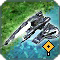 Zthuee
- BuildTime:
180→ 270
Zthuees are more efficient BP-wise for their strength compared to other T1 arties which allows for powerful arty spam with a rather small investment in factories. This brings them more in line with other factions.
 Titan and Loyalist
Titan and Loyalist
- BuildCostEnergy:
5400→ 5250 - BuildTime:
2400→ 2160
This is a small buff to the Titan and the Loyalist bringing their E and BT costs more in line with other T3 units which should make massing them a bit easier, potentially prolonging the T3 light bot stage before bricks and percivals come out.
 Loyalist
Loyalist
- Add 1.5s stun to the slow-firing weapon affecting units up to and including T2, excluding navy and structures
Allows loyalists to better deal with T2 which is the main threat during early T3 stage.
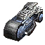 T1 Land Scouts
- Reduce the aggro range while on assist/attack move
- BuildTime:
80→ 60
Make scouts slightly more appealing to create early game and help the scouts to not aggro on enemy units and civilians from far away when they are given an attack move or an assist order.
 Mole
Mole
- BuildCostEnergy:
80→ 60 - EnergyMaintenanceCost:
5→ 1
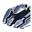 Spirit
- BuildCostEnergy:
40→ 60
 Selen
Selen
- Energy Maintenance Cost:
0→ 1 - StealthWaitTime:
1→ 3 - Vision and radar range are now multiplied by 0.6 when entering cloak mode
Drastically reduce the abusiveness of cloaked selens both in the early game with the reduced radar as well as in the mid game with energy maintenance cost.
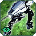 LABs
- Slightly increase the hitbox
Allow for more reliable hitting of unmicroed labs moving at an angle.
 Firebeetle
Firebeetle
- HP:
350→ 400 - ExplosionRadius:
6→ 6.5 - MaxAcceleration:
5→ 7 - TurnRate:
160→ 200 - Reduce detonation trigger distance when manually attacking a unit
Slightly increase maneuverability to compensate for pathfinding, slightly increase the explosion radius and buff hp to 400 for slightly more survivability, notably allowing it to survive an obsidian shot. Make the beetle come close before detonating if it is manually ordered to attack a unit, before it would detonate at max range and miss a lot of potential damage, now it either detonates up close or gets killed before that and detonates closer than before anyway. Added an extra range ring to indicate the detonation trigger radius.
 Rhino
Rhino
- Revert the weapon from a beam-type to a projectile-type to prevent misses when leading targets
Air
T1 Transports
- Add dummy weapons to T1 transports which allows LABs inside the transport to focus fire targets
 Scorcher
Scorcher
- Damage:
4→ 4.5 - InitialDamage:
47.5→ 42.5 - MuzzleSalvoDelay:
0.3→ 0.2
Scorcher’s drop pattern allows it to sometimes kill engies even if enemy manages to partially dodge. These changes convert some of the bomb’s initial damage to damage over time as well as make the drop pattern tighter resulting in a smaller spread of the bombs thus not allowing the last two of them to home in on an engie that had already started to dodge.
 Notha
Notha
- HP:
1175→ 1000
Make shooting nothas down easier as they could be extremely difficult to deal with if you lose air control.
 Soul Ripper
Soul Ripper
- Add Stealth at -600 energy maintenance cost
After the numerous veterancy changes as well as experimental BT changes soul ripper has lost most of its strength, this will allow it to rotate around the map easier and be more effective at harassing and sniping.
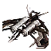 Revenant
- DamageRadius:
7→ 6.5 - EnergyMaintenanceCost:
65→ 150
Shocker
- Damage:
3450→ 3000 - DamageRadius:
4→ 5.25 - Added a 3s stun of units up to and including T3
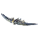 Sinntha
- Damage:
3250→ 3000 - DamageRadius:
5→ 6
 Ambassador
Ambassador
- Damage:
3000→ 3100 - DamageRadius:
6→ 5.5
All strat bombers
- Double the amount of mass killed required to vet
Reduce the snowball effect from early strat bomber rushes killing mexes continuously and regaining any hp lost, making it very difficult to kill them if you don't have air control.
Shimmer
- Better match the EMP radius to the damage radius
 Jester
Jester
- Fix the bug where it would not do damage to moving units
- Replace splash damage with soft projectile homing
Now jester should be able to hit all or at least most targets consistently.
Navy
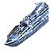 UEF Destroyer
- TurretYawRange:
140→ 160 - TurretYawSpeed:
90→ 100 - Torpedo firing cycle adjusted to combat torpedo defense better
Improve handling and micro potential, slightly improve effectiveness vs submarines.
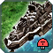 Cybran Destroyer
- TurretYawRange:
135→ 140
Make it slightly less punishing to have to retreat your navy.
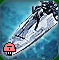 Aeon Destroyer
- TurretYawRange:
160→ 150 - TurretYawSpeed:
100→ 90
Slightly reduce the micro potential to soften the snowball effect that can occur with aeon destroyers.
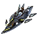 Seraphim Destroyer
- Torpedo firing cycle adjusted to combat torpedo defense better
 Atlantis
Atlantis
- Fix the AA behaving in a way inconsistent with the stats, adjust the stats to preserve the current balance
Structures
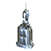 Kennel Drones
- Now have higher selection priority than buildings
 UEF T3 Sonar
UEF T3 Sonar
- Add Jamming
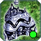 Paragon
- Add a 100,000 E storage
This will prevent the bug where despite not draining more E than paragon provides you still go into stall and drop shields.
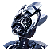 T1 PDs
- Adjust the hitboxes and bones of the PDs to make the wall-pd template behave the same way for each faction
 T4 Artilleries
T4 Artilleries
- Ranges normalized to 4000 (Mavor range)
This makes all T4 arties viable for all 3 people who play 81x81 maps.
Miscellaneous
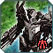Cybran ACU Stealth Upgrade
- EnergyCost:
5000→ 14000 - MassCost:
350→ 650 - BuildTime:
500→ 800 - Provides 2000 extra HP
Gives cybran acu better chances in midgame against ACUs that can have both T2 and gun at the same time.
 Sera ACU Regen Field Upgrade
Sera ACU Regen Field Upgrade
- Now provides regen to the ACU itself, 10 hp/s for the first upgrade and 20 hp/s for the second
- Now uses different regen floor values for units depending on their tier:
Basic Tier
- RegenFloorT1: 3
- RegenFloorT2: 8
- RegenFloorT3: 15
- RegenFloorT4: 25
- RegenFloorSCU: 15
Advanced Tier
- RegenFloorT1: 15
- RegenFloorT2: 30
- RegenFloorT3: 60
- RegenFloorT4: 120
- RegenFloorSCU: 80
This boosts the upgrade's attractiveness over the T2 upgrade and also fixes some inconsistencies where some units were getting more regen from the first upgrade tier than the second.